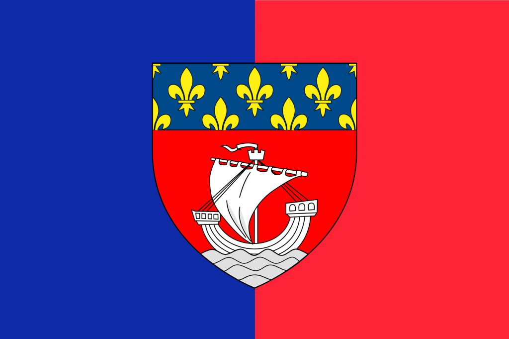

París
París es también conocida por muchos nombres, siendo uno de ellos La Ville Lumié re (La Ciudad de la Luz) debido no solo a su fama como ciudad estandarte de las artes y las ciencias, sino también por la temprana iluminación de sus calles. A pesar de que el distrito VII, en el que se encuentra la Torre Eiffel y los Campos Elíseos sea la zona más frecuentada, llena de locales de lujo, monumentos como el Palacio Borbón o museos como el de Orsay.
Con más de dos millones de habitantes, la capital es una de las más pobladas del viejo continente, además de uno de los destinos más visitados de todo el mundo por sus innumerables atractivos, que exigen dedicarle varios días. Uno de ellos lo constituye el gran desarrollo arquitectónico del siglo XIX, que dejó joyas como el Mercado de la Madeleine, las Grandes Halles y la Torre Eiffel, icono por excelencia de la ciudad.